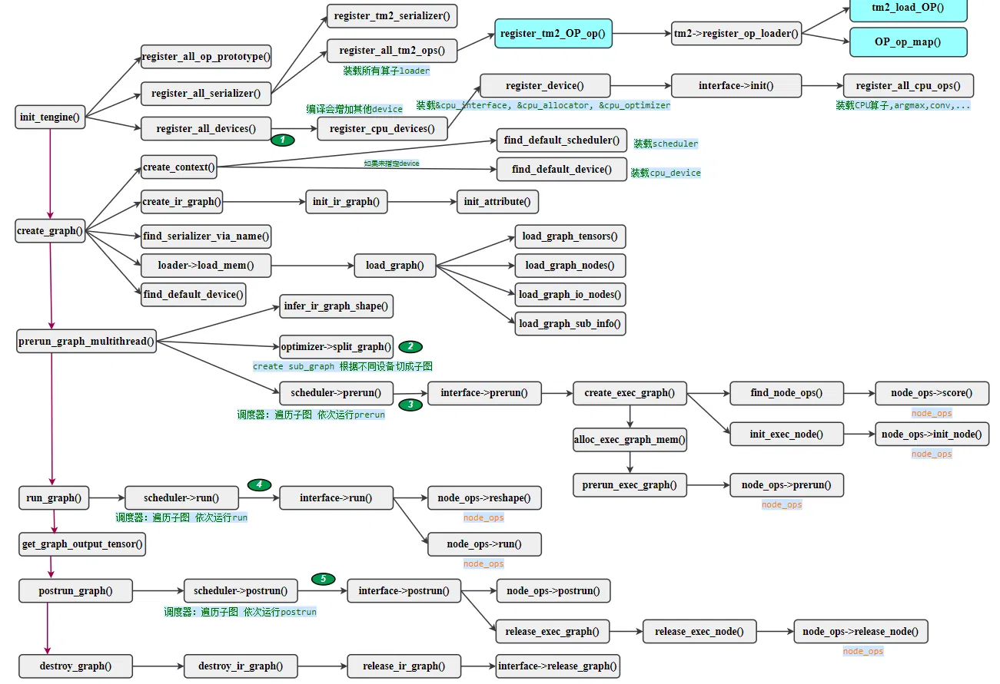
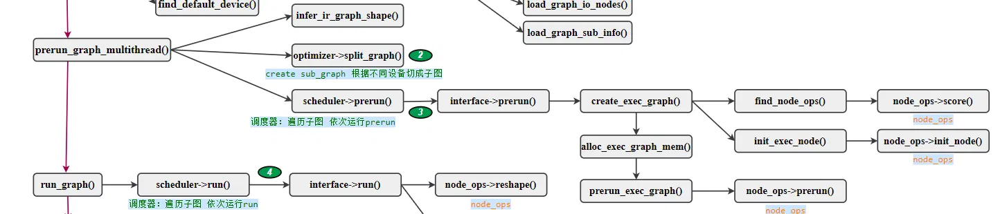
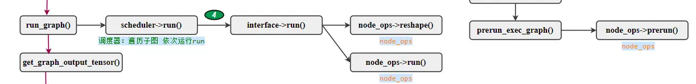
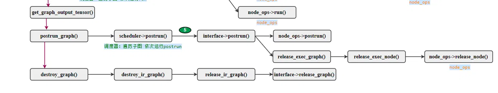

# 前言
本篇通流程脑图和代码介绍 Tengine 推理引擎的推理流程。本篇是第二篇。第一篇地址。Tengine 工程地址。
作为初学者，错误在所难免，还望不吝赐教。
# 介绍
Tengine 由 OPEN AI LAB 主导开发，该项目实现了深度学习神经网络模型在嵌入式设备上的快速、高效部署需求。为实现在众多 AIoT 应用中的跨平台部署，该项目使用 C 语言进行核心模块开发，针对嵌入式设备资源有限的特点进行了深度框架裁剪。同时采用了完全分离的前后端设计，有利于 CPU、GPU、NPU 等异构计算单元的快速移植和部署，降低评估、迁移成本。
# 总流程图
总流程图：

init_tengine() 和 create_graph() 流程位于第一篇地址中。
# prerun_graph_multithread()

该函数是神经网络模型运行前的与运行流程。从流程图中看，其主要调用了三个函数。
# 1.infer_ir_graph_shape()
推理引擎要根据输入 tensor 的维度来推理输出 tensor 的维度。例如某个卷积节点的输入维度是【1，32，128，128】，依据 kernel 大小计算出输出维度【1,64,128,128】。所以该函数会按顺序执行所有节点，并调用每个节点的 op->infer_shape 方法（前述提到过），完成整个模型的 tensor 维度推理。
# 2.optimizer->split_graph()
切分子图。这是一个为了实现多设备运行而实现的方法，即通过切分子图实现。
当前已有一个总图，包含模型所有的节点。而设备可能包括 CPU、GPU、NPU、DNNL 等等，而这些设备可能仅支持一部分算子，这就要求将总图切分成设备支持的子图，和设备不支持的子图。设备支持的子图交给设备运行，不支持的交给 CPU 执行。
经过这个函数之后，子图就变成一各执行单元。
# 3.schedule->prerun()
预运行，其调用的是 interface->prerun() ，即前述的，和设备相关的接口中的 prerun() 函数。其又调用了三个函数：
create_exec_graph() ：为每个子图创建执行子图。
通过 find_node_ops() 函数，找到节点的所有执行方式。前述卷积算法，就注册了三种执行方式。
ret = register_conv_ref_op(); | |
ret = register_conv_dw_hcl_x86_op(); | |
ret = register_conv_hcl_x86_op(); |
找到所有执行方式之后，调用每种执行方式的 node_ops->score() 函数，获得一个得分。例如 conv_hcl_x86_op 这种实现方式，其 score() 函数如下。它根据该节点的参数返回一个得分。
static int score(struct node_ops* node_ops, struct exec_graph* exec_graph, struct node* exec_node) | |
{ | |
struct node* ir_node = exec_node; | |
struct graph* ir_graph = ir_node->graph; | |
struct tensor* input_tensor = get_ir_graph_tensor(ir_graph, ir_node->input_tensors[0]); | |
struct tensor* output_tensor = get_ir_graph_tensor(ir_graph, ir_node->output_tensors[0]); | |
struct conv_param* param = (struct conv_param*)exec_node->op.param_mem; | |
int group = param->group; | |
int kernel_h = param->kernel_h; | |
int kernel_w = param->kernel_w; | |
int in_c = input_tensor->dims[1] / group; | |
int out_c = output_tensor->dims[1] / group; | |
if (input_tensor->data_type != TENGINE_DT_FP32 && input_tensor->data_type != TENGINE_DT_UINT8 && input_tensor->data_type != TENGINE_DT_INT8) | |
return 0; // 返回 0 得分，意思是无法使用 | |
if (group != 1) | |
return 0; // 返回 0 得分，意思是无法使用 | |
return OPS_SCORE_PREFER; // 返回 OPS_SCORE_PREFER 得分，意思是推荐使用 | |
} |
得分分为以下几档：
#define OPS_SCORE_STATIC 10000 | |
#define OPS_SCORE_BEST 8000 | |
#define OPS_SCORE_PREFER 6000 | |
#define OPS_SCORE_CANDO 4000 | |
#define OPS_SCORE_NOTSUP 2000 |
推理引擎将选择得分最高的作为执行方法，而得分低于 4000 的方法不可使用。
下一步是调用 node_ops->init_node() 函数，是初始化节点预留的接口。
通过 prerun_exec_graph() 函数调用 node_ops->prerun() ，这个是节点预运行而预留的接口。
# run_graph()

到这里才开始实际执行图的每个节点。
和前述一样，还是调用和设备相关的接口 interface->run() ，先调用每个算子的 node_ops->reshape() 函数，从工程中来看该函数仍然是在做维度推理的工作，与前述的 infer_shape() 相同。似乎是重复的做法，不过不同之处在于前述的 infer_shape() 只在模型构建完成之后运行一次，而这个 reshape() 函数在算子每次执行之前都要调用。
可能是为了防止模型的每次运行，输入 tensor 大小都不一样？毕竟神经网络模型通常会不断输入数据，重复运行。（当开发者确定每次输入输入维度一致时，这里的运算就有些浪费时间了。）
然后调用算子的具体执行： node_ops->run() 。
# postrun_graph()

图的后处理。
调用每个节点的后运行 node_ops->postrun()
调用子图的释放函数 release_exec_graph() ，调用每个节点的释放函数 node_ops->release_node() 。
# destroy_graph()
调用整个图的释放函数 interface->release_graph() 。
一张脑图就帮我们整体把握 Tengine 推理引擎。
# 后记
本博客目前以及可预期的将来都不会支持评论功能。各位大侠如若有指教和问题，可以在我的 github 项目 或随便一个项目下提出 issue，或者知乎 私信，并指明哪一篇博客，我看到一定及时回复！